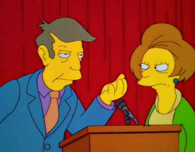

Test Site

A VERY basic page to practice web site building.
This site will test how a browser handle a mouse, such as
- click down behaviors
- mouse move tick rate when a button is hold down
- use mouse to draw simple lines and dots
The idea comes from here.